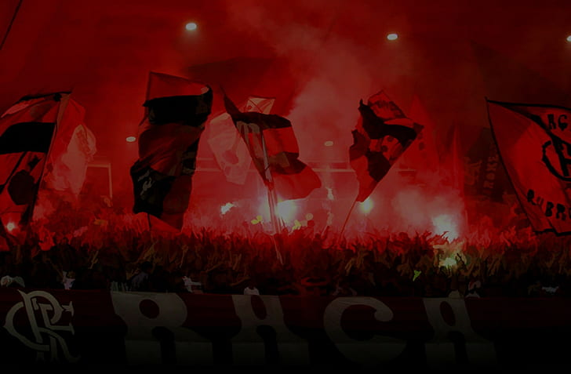
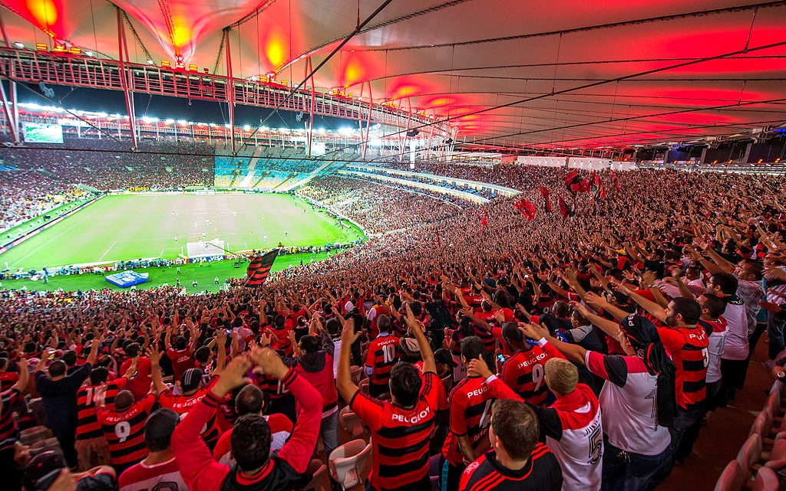
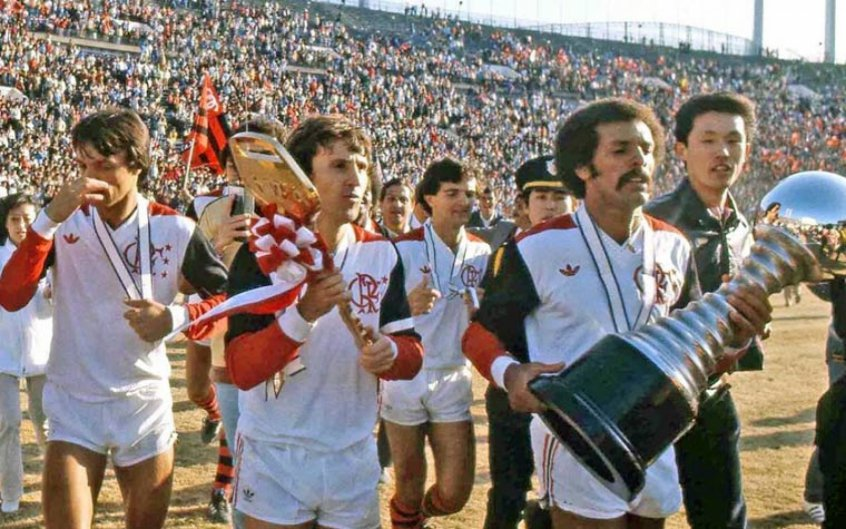

Ser um rubro-negro fanático não é apenas torcer por um time de futebol; é abraçar uma paixão que transcende as quatro linhas do campo. É ser parte de uma história gloriosa, repleta de emoções intensas, vitórias épicas e um amor inabalável pelo Clube de Regatas do Flamengo.
Tudo começou em 1895 , quando um grupo de jovens remadores decidiu fundar o Flamengo. Naquela época, o foco estava nos esportes aquáticos, mas logo o futebol conquistou corações e se tornou o protagonista da narrativa rubro-negra. As cores vermelho e preto foram escolhidas para representar a paixão e a bravura que caracterizariam o time ao longo dos anos.
As primeiras décadas foram desafiadoras, mas o Flamengo começou a ganhar destaque no cenário nacional. A década de 1930 marcou a consolidação do clube como uma potência no futebol brasileiro. A torcida, conhecida como "Maior do Mundo," começou a entoar cânticos que ecoariam pelos estádios e transcenderiam o tempo.
Os anos dourados do Flamengo chegaram na década de 1980, uma era que ficaria marcada para sempre na memória dos rubro-negros. Sob o comando do técnico Paulo César Carpegiani , o time conquistou o título do Campeonato Carioca , da Taça Guanabara e da Taça Rio em 1981, formando uma equipe inesquecível com ícones como Zico, Júnior, e Leandro .
O ápice dessa jornada gloriosa foi a conquista da Taça Libertadores em 1981 , seguida pelo mundial no mesmo ano. A vitória sobre o Liverpool, com um gol memorável de Zico, ecoa na história como um dos momentos mais grandiosos do futebol brasileiro. O Maracanã pulsava de emoção, e o mundo testemunhou o Flamengo alcançar o topo do futebol mundial.
O amor pelo Flamengo ultrapassa gerações, e a Nação Rubro-Negra persiste em momentos de glória e desafios. Em 2019 e 2022 , o clube, contando com jogadores como Gabigol, Arrascaeta, Bruno Henrique, Everton Ribeiro, Rodrigo Caio, Filipe Luís conquistou novamente a Taça Libertadores , trazendo alegria e emoção para os corações rubro-negros. A torcida transformou o Rio de Janeiro em um mar vermelho e preto, celebrando a vitória que reafirmou a grandeza do Flamengo.
Ser um rubro-negro fanático é mais do que celebrar títulos; é abraçar a identidade, a cultura e a tradição que fazem do Flamengo um clube único. É estar presente nos altos e baixos, nunca abandonando as cores que representam uma paixão eterna. A história do Flamengo é uma saga que continua a se desenrolar, com cada capítulo sendo escrito pelo suor, determinação e amor de uma Nação que não conhece limites. É viver a certeza de que, no coração rubro-negro, a chama da paixão nunca se apaga.